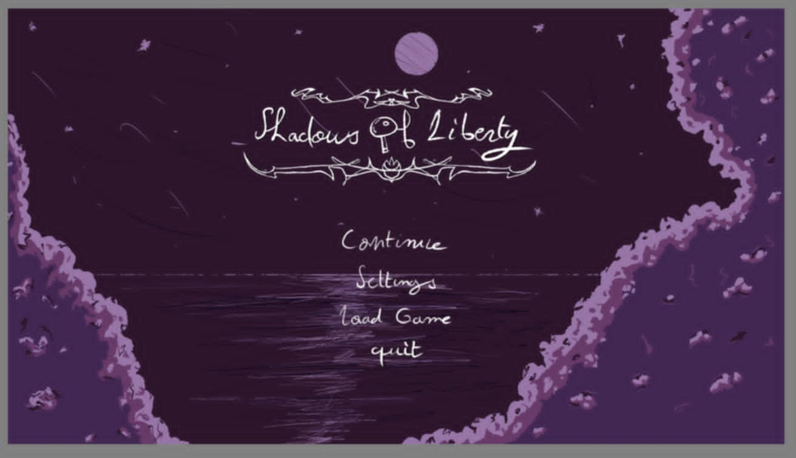

Shadows of Liberty
Jeu d'aventure 2D développé avec C avec SDL 1.2
Shadows of Liberty est un jeu d'aventure 2D captivant qui combine exploration, résolution d'énigmes et combats dans un univers immersif. Développé en tant que projet étudiant, ce jeu offre une expérience de jeu fluide avec une direction artistique soignée.
Fonctionnalités principales
- Gameplay dynamique - Mélange d'exploration, de puzzle et d'action
- Niveaux variés - Environnements détaillés avec des thématiques distinctes
- Progression du joueur - Système de déblocage de nouvelles capacités
- Interface intuitive - Navigation simple et affichage optimisé
- Système de sauvegarde - Conservation de la progression
Technologies utilisées
- C
- SDL 1.2
- Gestion des assets personnalisée
- Git pour le contrôle de version
Galerie

Ce que j'ai appris
- Programmation orientée objet avancée en C++
- Conception de systèmes de jeu (collision, IA, physique)
- Gestion de projet complexe avec plusieurs composants
- Optimisation des performances pour une expérience fluide
- Équilibrage de la difficulté pour une expérience de jeu satisfaisante